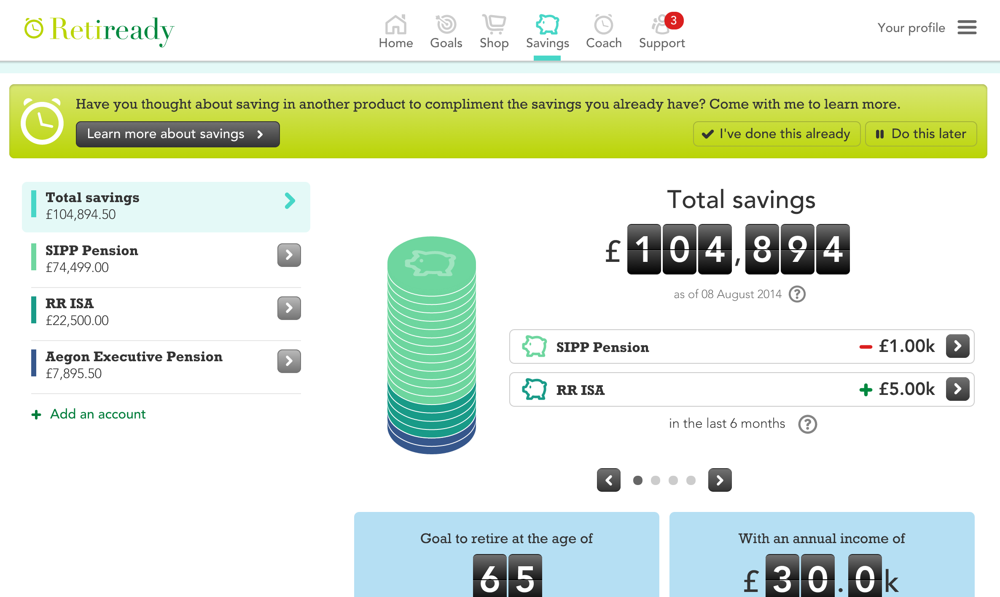
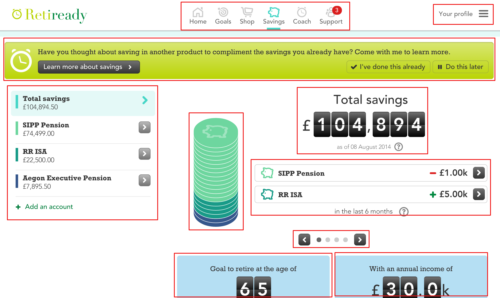

Web Components
Technology overview and a quick demo
Vitaly Kondratiev
August 2014
@vitkon
Definition
Web Components is a term for an umbrella of technologies and APIs that enable web developers to create custom HTML elements. An HTML element is a component of a web page.
The Page
Different perspective
4 Core Elements
- Custom Elements
- Templates
- Shadow DOM
- Imports
Browser Support
- Chrome — full
- Firefox — partial
- Safari — none, in the roadmap
- IE — none, in the roadmap
Create an element
var MyElement = document.registerElement('hello-world');
// or document.createElement
Extend other elements
document.register('super-button', {
prototype: Object.create(HTMLButtonElement.prototype),
extends: 'button'
});
Extend other components, not only HTML
Baked-in templates
hello world paragraph
Hello {{who}}
Template is not rendered until a component has been initialised
Composability & scoping
DOM / CSS scoping for the component
var shadow = el.createShadowRoot();
shadow.innerHTML = "I'm in the shadow!"
Polymer puts template to Shadow DOM by default
Shadow DOM benefits
- CSS can be scoped
- IDs are local to the shadow DOM
- Params can be used to modify components
- insertion point for the content <content>
- ::content to style insertion points
Hello {{who}}
Find → import → USE
Dependency management for web platform
allows to bundle related HTML/CSS/JS
hello.html
Hello {{who}}
Demo time